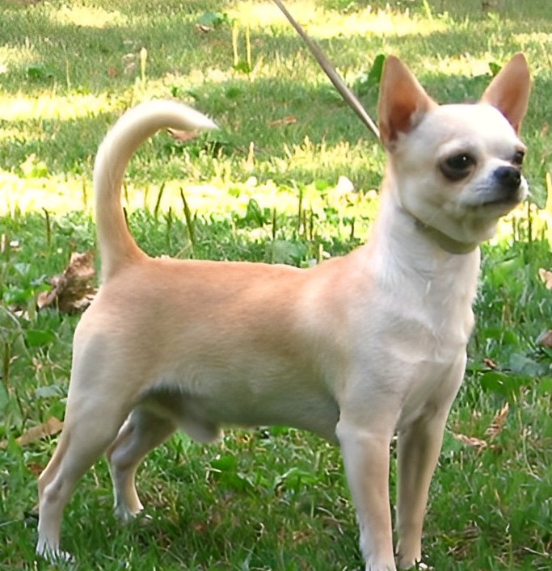

Чіхуа-хуа
Розділ №1

Історія розвитку породи досить заплутана і заснована, в більшості своїй, на теоретичних даних і
припущеннях.
Тим не менше з фольклору, археологічних розкопок можна припустити, що предки породи
походять з доколумбових часів і є найдавнішою американською породою собак.
Найпоширеніша версія припускає, що чихуахуа походять від породи течичі, яку тольтеки розводили як «кімнатних» собак, шляхом схрещування з китайськими породами, завезеними конкістадорами до Америки.
Імовірно, в стародавні часи предки цих собак були дикі, а за часів цивілізації тольтеків вони були одомашнені. Зображення й скульптури цих карликових собак служили для прикраси міської архітектури.
«Сучасні» чихуахуа були виявлені в 1850 році в старих руїнах близько
Каса Гранде в
мексиканському штаті Чивава.
Штат межує з американськими Техасом,
Аризоною та Нью-Мексико, звідки сучасна порода почала своє розповсюдження
по світу.
З того часу чихуахуа залишається однією з популярних кімнатних порід собак, особливо в
США, де стандарти цієї породи були визначені Американським клубом собаківників в
1904 році.
Розділ №2
Темперамент
Порода має дуже стійку психіку як для собак карликових порід.
Вкрай рідко можна зустріти істеричного
представника цієї породи.
Чихуахуа відданий своєму господареві, іноді ревнивий, але не злий.